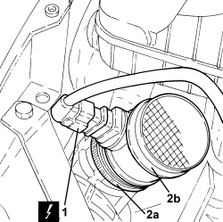

1060G10 AIR FLOW METER - R.R.
- Path
- Procedures > 10 ENGINE > 1060 DIESEL INJECTION SYSTEM > 1060G DIESEL INJECTION PRESSURE PUMP ELECTRONIC CONTROL > 1060G10 AIR FLOW METER - R.R.
- Kind
- repair procedure (removal / refitting; the operation number is the code)
- Applies to
- engines: 2.4 JTD 20v; all production periods
- Interactive page
- https://sloeber94.github.io/elrnDB-aBrrSpdr/en/#/946002994
Applies to: engines: 2.4 JTD 20v; all production periods
 Removing
Removing
 Refitting
Refitting- Make sure that the ignition key is in the OFF position, then disconnect the battery terminal (-).
Op. 1048A41 HOSE FROM FLOW METER TO TURBOCHARGER - R.R.
1. Disconnect the electrical connection from the air flow meter.
Description | Connector | |
|---|---|---|
1 | Air flow meter |
2. Loosen the band (2a) and remove the air flow meter (2b).

Applies to: engines: 2.4 JTD 20v; all production periods
Refitting
Removing- Place the air flow meter back in its housing and secure it using the band.
- Connect the electrical connection to the air flow meter.
Op. 1048A41 HOSE FROM FLOW METER TO TURBOCHARGER - R.R.
- Connect the negative battery terminal.
Topics linked from this page (2)
Topics that link to this page (8)
- 1048OA AIR INTAKE/VACUUM CIRCUIT CHECK
- 1060GG MEASURED AIR MASS CHECK
- 1060GS DEBIMETER OPERATION CHECK
- 1064BE CHECK TURBO VALVE PROTECTION FUSE
- 1008B10 POWER UNIT FRONT SUPPORT FLEXIBLE MOUNTING (TIMING SIDE) - REPLACE
- 1032D12 TIMING SYSTEM PROTECTIVE COVER(S) - R + R
- E5050 DIESEL ENGINE ELECTRONIC MANAGEMENT - WIRING DIAGRAM
- E5050 DIESEL ENGINE ELECTRONIC MANAGEMENT - COMPONENT LOCATION